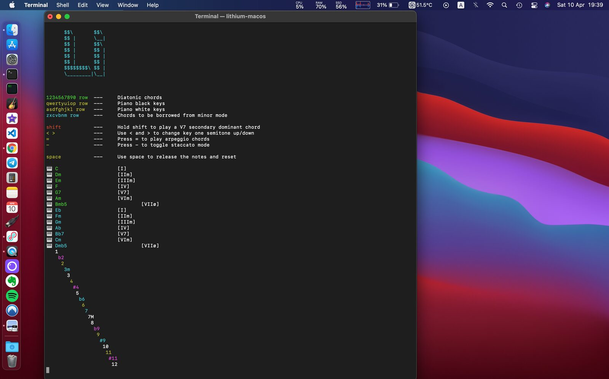
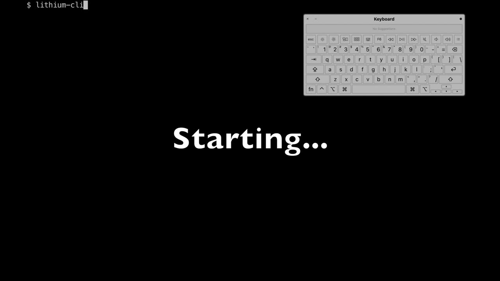

Lithium-cli virtual MIDI controller \| work in progress
Lithium-cli
PubPub Link
https://nime.pubpub.org/pub/4fgcok25/draft?access=ffdhmcl9
ABSTRACT
This project is meant to provide a simple keyboard-only virtual MIDI controller.
You can easily explore chord changes and melodies, learning about diatonic chords, secondary dominants, modal interchange and more.
It is a work in progress, the current version runs exclusively on a terminal and lacks any visualizations besides colored text.
Project website: https://mauriciocarbajal.github.io/lithium-cli/
3.Program Notes
lithium-cli: A virtual MIDI controller with CLI interface designed to grasp basic concepts of music harmony.
4. Media



▶